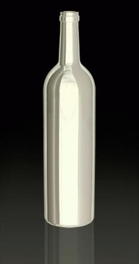

Anexo:Blanco y en botella
De:
La Frikipedia
, la enciclopedia
extremadamente
seria.

¿?
Almidón para camisas
Horchata
Harina dentro de una
botella
Crema de calabacín embotellada
Tippex
lefa
para analizar
Cal viva
Cal apagada
Médula embotellada
Cáscaras de
huevo
en botella
Una botella llena de puré de patata sin guisantes
Una botella de 1,5 l. llena de pintura blanca, con una etiqueta en la que pone "no beber"
Una botella de 1,5 l. llena de pintura blanca, con una etiqueta en la que pone "bébeme", escrita por un
hijo puta
Farlopa
Azúcar
Sal
Mezcla de hagua y yeso en una botella
Nata
Cola para madera
After shave de ese
Pus embotellado con la etiqueta "bébeme", colocada por otro
hideputa
Vino
Blanco
Papel molido embotellado
Nieve
Chapapote en negativo
Plástico blanco del usado para hacer botellas
Leche... de
soja
Ojos sin iris ni pupila
Dientes blanqueados
Muñeco de Copito de Nieve
Pelo de cobaya
Miniyo de Rey Ayanami (
Evangelion
)
Caspa
Polvo de Ángel
Requesón polleril
Burgo de Arias embotellado
Pasta de dientes
Ajoblanco
Una novia miniaturizada y embotellada
Cachos de Copito de Nieve congelados
Espuma de
birra
Bayleis o como se escriba
Mierda de perro muy seca
Merengue
Camiseta del
Real Mandril
Tungsteno
Jaco
Cacas de pajaro
Savia
Bolas de papel higienico
No hay nada pero la botella es blanca
Una camiseta de la frikipedia
Cuajada
Yogur natural
Queso de burgos
Vomitos de alguien que haya comido productos lacteos
La
caca
de un
negro
Elefantes rosas pintados de blanco
Pelo de un albino
Vodka blanco
Una botella con un extraño liquido blanco dentro de otra botella
Nubes
Compresas
Tampones
Una gaviota
Un cuervo disfrazado de gaviota
La espuma de afeitar, jamas usada por
Chuck Norris
Sangre embotellada con Tippex
Betun blanco
Una escupidera
Sangre de
Wombat
donada por
Chuck Norris
Arroz con leche, pero sin el arroz
El
señor miyagi
Pepiño Blanco dentro de una botella
Esencia de nube.
Rueda de prensa de Madrid 2020 ante el COI (Alejandro Blanco y Ana Botella).
Autor(es):
Doctor grijander
Homer Tunder
Frikiman
Aque
Paranoica
AlemanH
Harry El del Pote
Eldelpapeldelculo
Cuer vo
Por que es gilipollas
Frikipedia 2005-2016, Licencia
GFDL 1.2
- Extraído por FrikiLeaks
 De: La Frikipedia, la enciclopedia extremadamente seria. De: La Frikipedia, la enciclopedia extremadamente seria.
De: La Frikipedia, la enciclopedia extremadamente seria. De: La Frikipedia, la enciclopedia extremadamente seria.